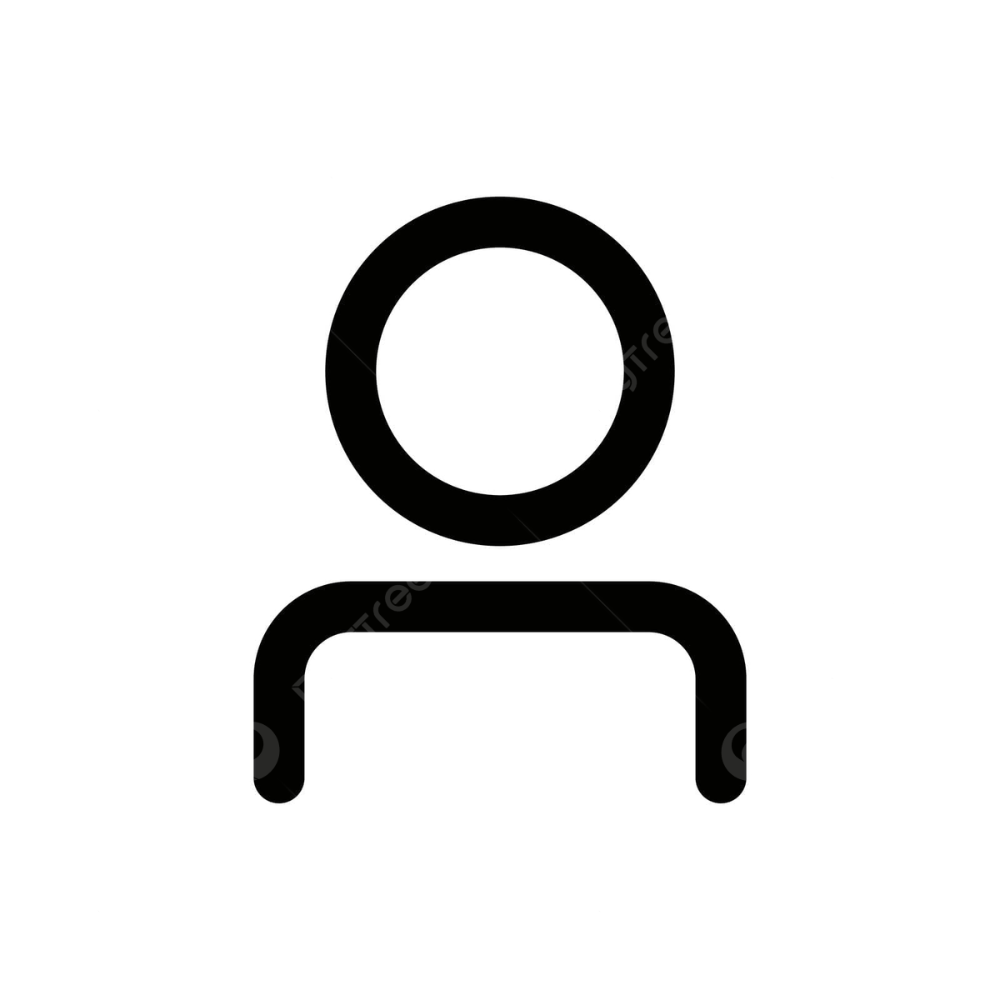
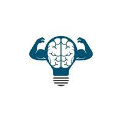

a propos

présentation
Je m'appelle Adam Jlaiel, je suis étudiant en réseaux et télécommunication à université de la sorbonne a Villetaneuse. J'ai 18 ans et je suis un passionné d'informatique, de la cyber-sécurité ainsi que des voitures de sport.

formation
Je suis actuellement en première année. J'apprends quotidiennement dans le cadre de mon activité de BUT réseaux et télécommunication grace au TP qui nous proffesionalise et nous met en conditions réel.

motivation
Je suis profondément motivé par cette discipline qui alimente ma passion pour la cybersécurité. En ajoutant a cela mon envie d'apprendre toujours plus